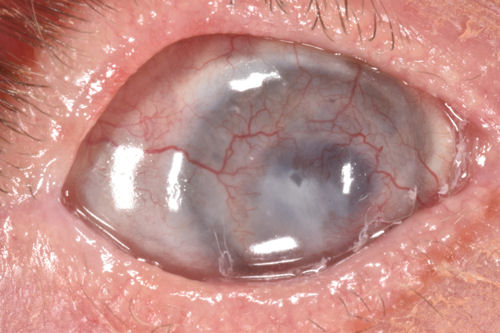
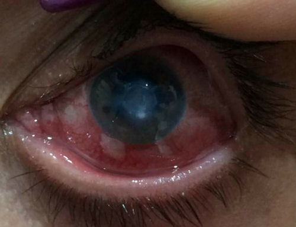
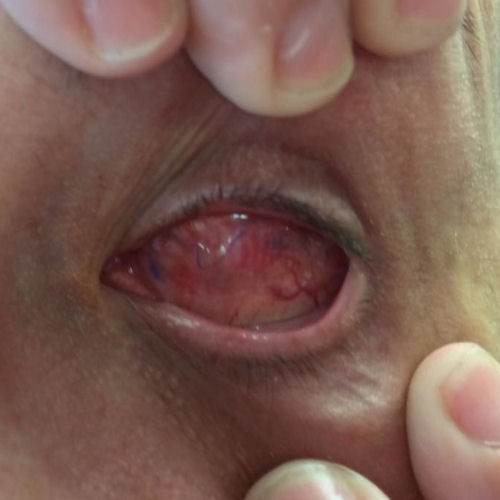
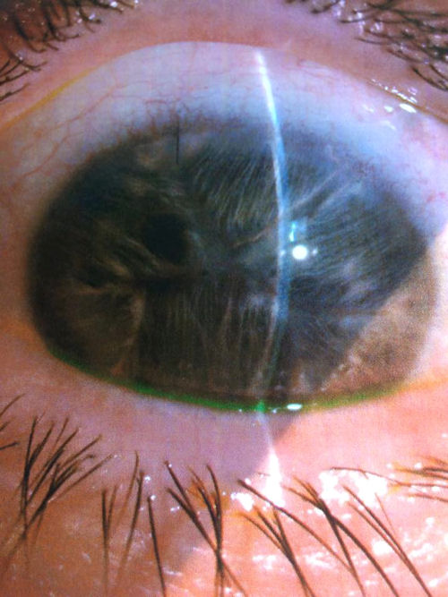
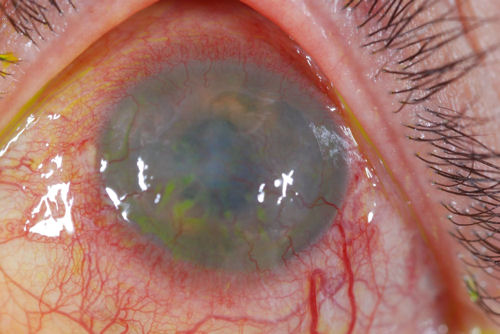

Хирурги, работающие в системе Lasik, преуменьшают значение осложнений, связанных с процедурой Lasik. В конце концов, они пытаются навязать вам ненужную операцию, которая подвергает значительному риску самое ценное, что у вас есть, - зрение. Мы видели, как хирурги, работающие в системе Lasik, ложно заявляли, что еще никто не ослеп после процедуры Lasik. Неправда! Вы можете ослепнуть после процедуры Lasik. Полная слепота, то есть отсутствие восприятия света, после процедуры Lasik встречается крайне редко, но такое случалось. Официальная слепота, которая определяется как острота зрения в очках 20/200 или менее, возникает в результате применения Lasik гораздо чаще, чем готовы признать хирурги. Точных статистических данных о слепоте после Lasik нет, в первую очередь потому, что никто не отслеживает осложнения после Lasik. Закон FDA требует, чтобы клиники Lasik сообщали о серьезных осложнениях после Lasik, но практически ни один хирург Lasik не соблюдает этот закон. Поскольку вы не можете доверять тому, что хирург Lasik расскажет правду об осложнениях и риске слепоты после операции, мы создали эту веб-страницу в надежде, что это убедит вас не рисковать своим зрением.
На самом деле, слепота - не самый худший из известных результатов Lasik. Некоторые пациенты совершили самоубийство из-за Lasik осложнения, а другие предпринимали попытки самоубийства.
Слепой глаз после операции LASIK

Изображение любезно предоставлено доктором Эдвардом Бошиком. Это фотография глаза, перенесшего операцию LASIK, у которого через несколько лет после операции развились осложнения, включая множественные инфекции, что привело к полной слепоте. Пациент перенес 5 неудачных операций по пересадке роговицы и в настоящее время ожидает шестую операцию по пересадке роговицы.
Инфекция Mycobacterium chelonae после операции LASIK, в настоящее время слепая
37-летняя женщина перенесла операцию LASIK в июле 2017 года после того, как ее ввели в заблуждение, что операция безопасна. У нее сразу же возникли проблемы с одним глазом. Хирург перепробовал различные методы лечения, но состояние ее глаза продолжало ухудшаться. Несколько месяцев спустя она обратилась за консультацией к другому офтальмологу, который диагностировал у нее инфекцию, вызванную mycobacterium chelonae. Из-за того, что инфекция бушевала так долго, ее роговица была разрушена. Теперь она слепа на этот глаз и испытывает постоянную боль. Ее единственная надежда на восстановление зрения - найти врача, который сможет взять инфекцию под контроль, а затем сделать пересадку роговицы. Последствия этой ситуации для ее жизни огромны. Она чувствует, что больше не в состоянии полноценно заботиться о своих троих детях. Стресс и депрессия привели к другим проблемам со здоровьем, и она замкнулась в себе. Она делится своей историей в надежде, что это может спасти кого-то еще от того, чтобы стать жертвой.

История Клэр Беланд
Клэр перенесла операцию Lasik в 2014 году. Ей потребовалась повторная операция Lasik на левом глазу, которая вызвала отслоение сетчатки. Клэр перенесла операцию по восстановлению сетчатки, но операция оказалась неудачной и привела к развитию катаракты. Затем Клэр перенесла операцию по удалению катаракты, которая привела к резкому повышению внутриглазного давления. Это привело к необходимости проведения еще одной операции по имплантации клапана внутрь глаза для регулирования внутриглазного давления. Эта операция также прошла совершенно неправильно. Ее глазное давление упало слишком низко, что привело к ухудшению зрения. Глаз Клэр полностью ослеп из-за злокачественной глаукомы и отсутствия зрачка. Боль в глазу была настолько сильной, что 30 января 2017 года Клэр пришлось перенести операцию по удалению. Теперь у Клэр есть глазной протез. История Клэр - пример того, что мы называем "эффектом домино при ненужных операциях на глазах". На рисунке ниже приведена фотография глаза Клэр после операции по удалению.

На рисунке ниже приведена фотография глаза Клэр, сделанная до потрошения.

История Кристины Уайли
Более 5 лет назад я перенес операцию LASIK. Тогда ФРК была выполнена только на правом глазу, для лучшего результата.
Примерно через неделю я заметил ухудшение зрения и вспышки в правом глазу. Я немедленно отправился к врачу, который проводил операции. Он сразу же сказал, что это "не от ФРК", и отправил меня восвояси.
Мой муж - терапевт, и после разговора с ним он связался с моим неврологом, и они направили меня на МРТ, думая, что это, возможно, какая-то опухоль. Затем я пошла к нему в кабинет, где невролог сказал нам, что МРТ не выявило никаких отклонений. И тогда он посмотрел мне в глаза. Он сразу увидел, что это действительно отслоение сетчатки.
Этот процесс занял еще около 2 дней. Я сразу же отправилась на операцию к специалисту по сетчатке, чтобы восстановить и пришить сетчатку на место. Она прикреплялась около 2 недель. Затем в течение года отслаивалась еще 4 раза. Я перенес операцию в общей сложности 5 раз, всегда соблюдая протокол "лежания лицом вниз", согласно которому каждая операция проводилась лицом вниз в течение 10 дней.
Во время последней операции мой глаз больше не выдержал, и у меня произошло кровоизлияние в сосудистую оболочку глаза. Во время операции глаз был спасен. Но теперь я ничего не вижу правым глазом.
Я могла бы справиться с этим, если бы не боль, с которой мне приходилось сталкиваться время от времени. Я делаю аутогольные инъекции крови. Это помогает. Я принимаю стероидные капли 4 раза в день. Но сейчас мое давление упало до 3. Обычно до 6. Если помпа в задней части глаза перестанет работать из-за повреждения внутренней оболочки, мое давление (глаз заполнен маслом) упадет еще больше, и они (нынешний специалист по сетчатке) захотят удалить глаз.
Мне за 40, и у меня трое детей. Мне трудно находиться на улице во время бейсбольных матчей моих сыновей.
Боль то усиливается, то утихает, но сейчас она не такая страшная. Я была у одного ОЧЕНЬ ХОРОШЕГО офтальмолога в Сент-Луисе, штат Миссури, который посоветовал как можно дольше следить за глазами, но больше он ничего не мог поделать с болью.
Это сильно сказалось на моей семье, так как я не вожу машину по ночам, восприятие глубины ужасное. Я не такая хорошая мать, когда испытываю боль.
На фотографии ниже изображен глаз пациента из Доктор Эдвард Бошник которому была сделана операция LASIK. Через некоторое время после операции Lasik у этого пациента произошла полная отслойка сетчатки, что привело к слепоте и отсутствию восприятия света. Примерно девять лет спустя лоскут LASIK разошелся, отделив переднюю часть роговицы от подлежащей ткани. Кроме того, внешний клеточный слой роговицы - эпителий - начал отделяться от нижележащей роговицы. В результате всех повреждений, нанесенных глазу, роговица покрылась рубцовой тканью и кровеносными сосудами, и роговица потеряла прозрачность.

Секероглу и др. Редкое тяжелое осложнение Lasik: двусторонний грибковый кератит. J Ophthalmol. 2010;2010: 450230.
Абстрактный
Цель. Хочу сообщить о необычном случае тяжелого двустороннего грибкового кератита после лазерного кератомилеза in situ (LASIK). Метод. Через две недели после операции LASIK у 48-летнего мужчины развилась двусторонняя диффузная инфильтрация роговицы. В соскобах с роговицы были обнаружены грибковые нити, но результаты посева были отрицательными. Результаты. Изъязвление роговицы на левом глазу уменьшилось, в то время как на правом глазу произошла спонтанная перфорация и, в конечном итоге, потребовалось удаление роговицы, несмотря на местное и системное противогрибковое лечение. Выводы. Грибковый кератит, особенно с двусторонним поражением, является очень редким и серьезным осложнением операции LASIK. Клиническое подозрение имеет решающее значение, поскольку в большинстве случаев грибковый кератит ошибочно диагностируется как бактериальный кератит и может привести к серьезным визуальным последствиям, вплоть до потери зрения.
Сильви М. Велу, доктор медицинских наук; Джозеф Колин, доктор медицинских наук. Серьезные осложнения после двусторонней процедуры лазерного кератомилеза In Situ (LASIK) в один и тот же день. Arch Ophthalmol. 2002;120(12):226-227.
Выдержка: "На левом глазу процедура была осложнена перфорацией роговицы, вероятно, из-за неправильной сборки микрокератома старого поколения со съемной разделительной пластиной. Несмотря на хирургическое вмешательство, результат был очень плохим, и в день нашего обследования, через 1 год после операции, у нее отсутствовало восприятие света, а при исследовании с помощью щелевой лампы был выявлен туберкулез легких."
Стенограмма заседания Консультативного комитета FDA от 3 сентября 1999 года.
Лео Магуайр, доктор медицинских наук: "Я думаю, что мы заинтересованы в том, чтобы максимально избежать всех осложнений в рефракционной хирургии, уделяя особое внимание наиболее катастрофическим осложнениям. Дело в том, что многие из этих факторов связаны друг с другом. Итак, я думаю, что один из способов взглянуть на проблемы - начать с наиболее катастрофических осложнений, наблюдаемых при Lasik, и двигаться дальше. Безусловно, самым катастрофическим осложнением при Lasik, с которым я сталкивался, является гильотинирование переднего сегмента, приводящее к потере зрения и светоощущения. Это катастрофа, и такое может случиться. И у меня есть один пациент, о котором я забочусь для другого человека, с которым произошло нечто подобное."
Ссылка на стенограмму , см. стр. 62.
Отказ от ответственности: Информация, содержащаяся на этом веб-сайте, представлена с целью предупреждения людей об осложнениях процедуры LASIK перед операцией. Пациентам, у которых возникли проблемы с процедурой LASIK, следует обратиться за консультацией к врачу.